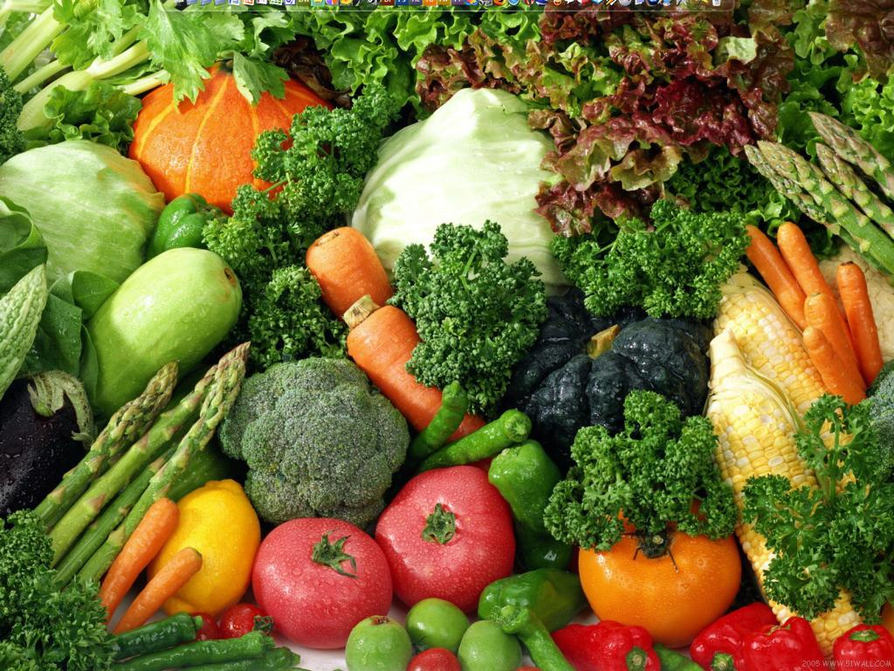
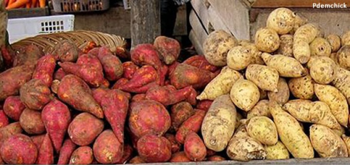

This Is The Source of vitamin A
Source of vitamin A
Foods that contain vitamins should we consume. Because vitamin is one substance that generally can not be produced by the body itself. So it is required to consume foods that contain vitamins every day to meet vitamin intake levels in the body. There are so many examples of foods that contain vitamin A. There are vegetables and there are also fruits. Vegetables such as carrots, red peppers, spinach, pumpkin. While fruits such as papaya and bananas. But there are also other foods that contain vitamin A which is made from animal, such as cheese, milk, and butter although vitamin A content is not as much as vegetables and fruits above. This article will explain the types of foods that contain lots of vitamin A. So that you can make it as a reference.
 1.Fruits contain vitamin A:
1.Fruits contain vitamin A:
Fruits that contain lots of vitamin A such as papaya and bananas. For bananas contain a lot of potassium, and also many vitamin A. Moreover, ambon bananas. Ambon Bananas can be directly eaten without the need for preparation. So to get vitamin A, you can just eat it. Then papaya is a fruit that contains vitamin A, which is found in beta-carotene which is present in 100 grams of papaya fruit. Papaya fruit can you eat directly without any special preparations after ripe. Is there another fruit that contains vitamin A? Of course, there are like guava, melon, guava, watermelon, starfruit, apple, persimmon, mango. Which fruit including the fruit of the country, we are not difficult to find it in Indonesia.
 2.Vegetables contain vitamin A
Not just fruit, vegetables are also contain a lot of vitamin A. Of certain vegetables will be very much in its content. Like carrots, pumpkin, spinach, which contains more vitamin A than other vegetables. We will discuss on spinach vegetables. This vegetable is very much vitamin A content, enough with just 1 bunch of spinach per day, then the need for vitamin A almost 80% fulfilled in the body. But like other vegetables, for children do not like vegetables, can disiasati to consume this processed spinach. One of them, spinach fried chips. So the child will be very easy to consume processed snacks are healthy and nutritious. Should not be green spinach, red spinach can also be. Other vegetables such as genjer leaf, cashew leaf, cashew leaf, long bean leaf, Gandaria, long bean, kale, chinese cabbage, pumpkin, soy pack, shy daughter, young ranti, seaweed, mustard, clover, eggplant hintalo and still many more vegetables you can consume for daily vitamin A needs.
 3.Tubers containing vitamin A
Tuber? Yes, tuber or tubers are also a great source of vitamin A. If you know, tubers like yellow yams, red sweet potatoes, red yams are examples of tubers that contain vitamin A. Tubers are also very difficult to accept by children or society in ordinary consumption alone. Then there are yellow steamed yams as processed tubers can be a recipe of cake or bread, pudding, and other processed dishes. Tubers eventually become a meal that is also quite fun to eat.
4.Nuts containing Vitamin A
Nuts? Like peas and red beans? Where the beans also contain vitamin A. These nuts can be used as a complement of vegetables or as a peanut porridge. There are even processed foods that use these red beans aside from the above. Like Chicken Peanut Soup. Is a dish dish to be eaten using rice as a meal together.
5.Animal Sources Vitamin A
For food of vitamin A from animal of chicken, duck, kidney of lamb, cow liver, chicken liver, liver sausage, various kinds of fish (baronang, skipjack, cork, kawalinya, kima, lehoma, malugis, crab, sardine, sunu, eggs and salted fish eggs as well. Very much right? Moreover, animal foods are very much processed. Both that can be cooked immediately, burned, then served in the foods we eat everyday, or can be a preservative such as sausage meat.
Cereals are widely circulated in the market certainly clearly displayed on the box content of nutrients and vitamins. So not all sold cereals contain a source of vitamin A. A good cereal should also contain low sugar and lots of fiber. Although this cereal is quite popular by children as breakfast, but you must make this cereal food the last option to serve it for your children or for yourself. Because the cereal that we can see the nutritional content on the box, not necessarily true as it is.
Milk, butter, fish oil, palm oil, fish meal and milk powder are some other preparations that contain vitamin A. Some of these preparations can be used directly for consumption, such as milk. But there is a need to be processed again into other processed foods such as palm oil, fish meal and milk powder. Of all vitamin A food source information above, which further explains foods containing vitamin A that you can consume with your family every day. In essence, do not overdo it in taking vitamins and do not also lack.
About Me
Some text about me in culpa qui officia deserunt mollit anim..
Popular Post
Image
Image
Image